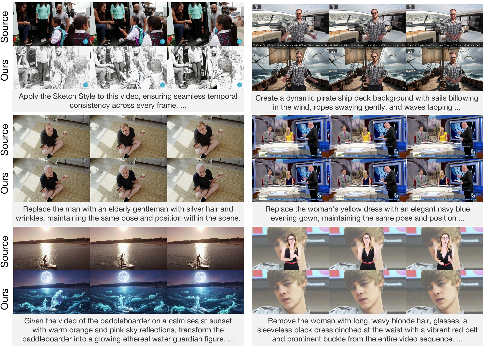
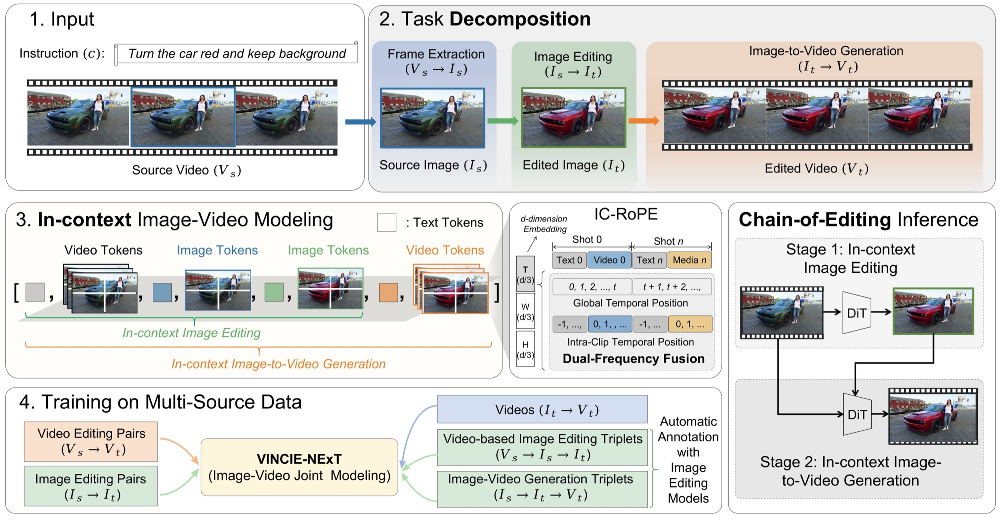
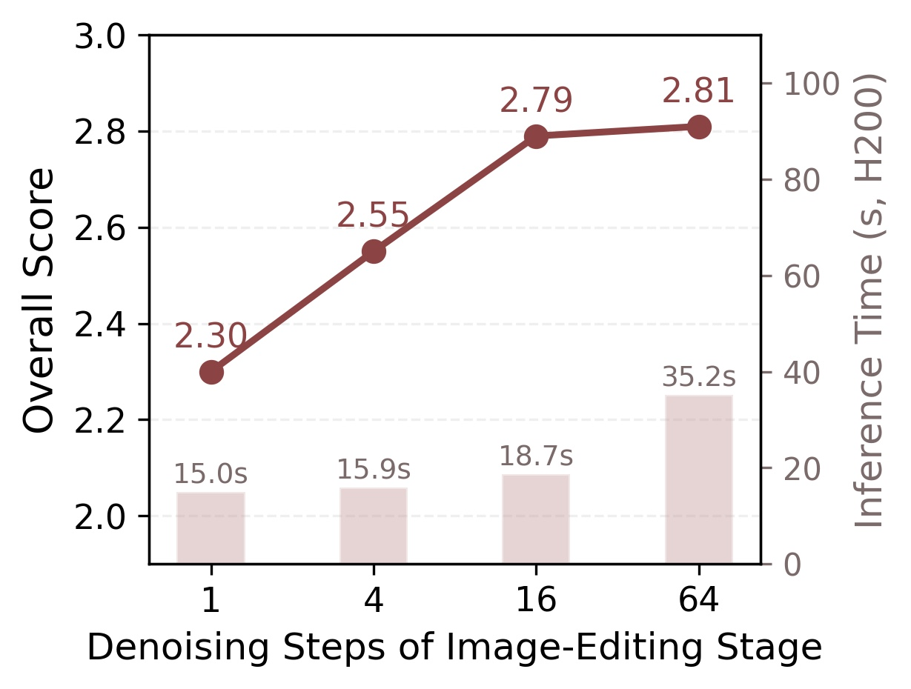
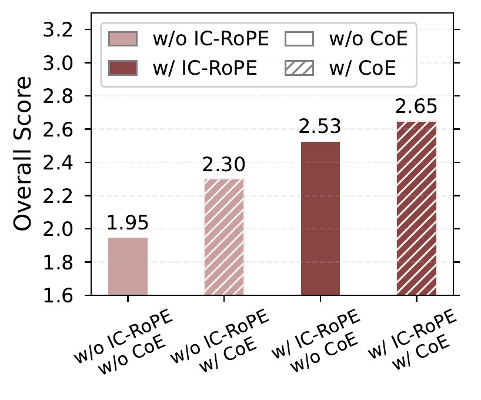
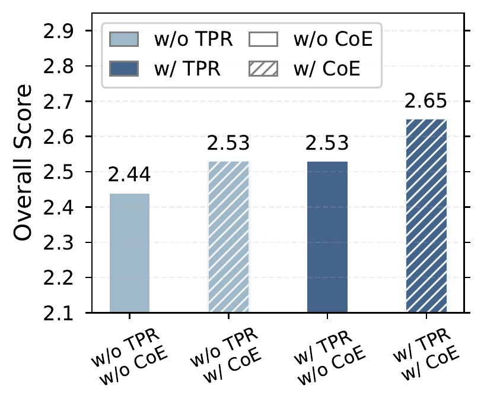
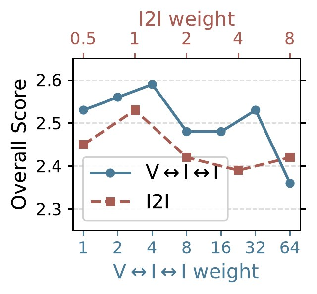
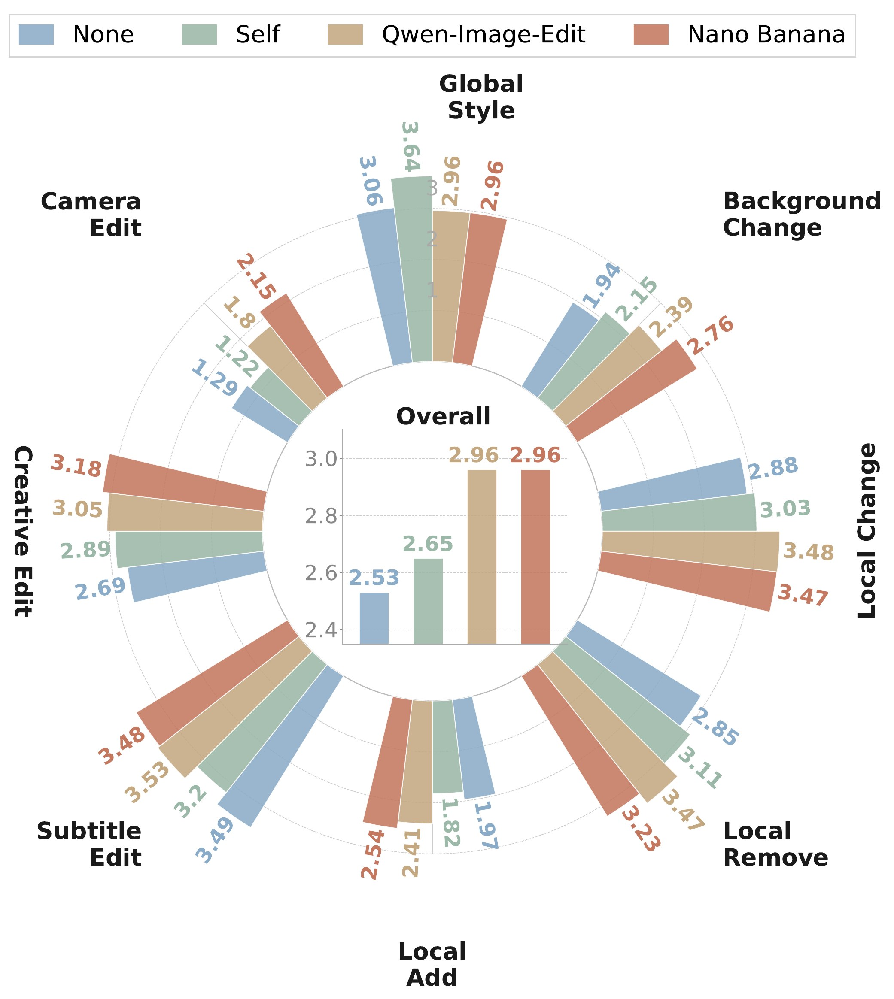
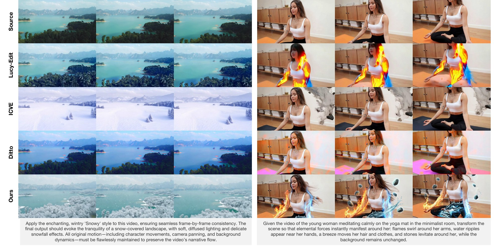
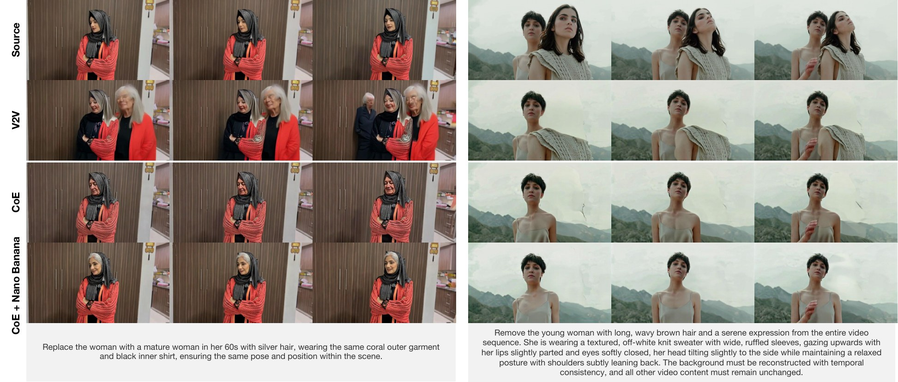

Qualitative showcase of VINCIE-NExT across diverse video editing scenarios. Our method enables temporally consistent stylization, dynamic background replacement, identity and attribute editing, scene transformation, and object removal, while preserving motion, structure, and visual coherence across frames.
Building a capable video editor remains significantly harder than a video generator: editing requires (source, instruction, edited) triplets that are prohibitively expensive to annotate and difficult to synthesize at scale, whereas image editing has already reached maturity with millions of such pairs readily available. In this work, we introduce VINCIE-NExT, a unified framework that transfers editing capability from images to videos through in-context visual demonstrations, alleviating the need for large-scale paired video editing data. VINCIE-NExT decomposes video editing into a structured chain of composable sub-tasks (Video → Image → Image → Video), routing editing intent through the image domain and enabling scalable joint training from heterogeneous image and video corpora under a unified diffusion objective. An image editing pair, synthesized by the model or supplied by the user, is prepended as an in-context visual demonstration that serves as a spatial appearance blueprint for every output frame. To ground appearance edits across the interleaved context, we introduce a novel position encoding that links image demonstrations and video frames in a shared spatial coordinate system, enabling pixel-faithful propagation of appearance changes to every output frame. Chain-of-Editing further provides principled test-time scaling: by executing the sub-task chain as progressive diffusion stages, editing quality can be improved by investing additional compute without retraining. Comprehensive experiments on OpenVE-Bench demonstrate the state-of-the-art performance across diverse editing categories, with ablations confirming the effectiveness of each component.
Rather than modeling the edited video directly from the source video and instruction, which demands large-scale paired video data, VINCIE-NExT routes editing intent through the image domain, where mature large-scale editing priors are readily available:
Video → Image → Image → Video
V→I extracts a representative keyframe from the source video, I→I applies the instruction-guided edit at the image level, and I→V recomposes the edited image into a temporally consistent target video. The whole chain is flattened into one interleaved token sequence and modeled by a single Diffusion Transformer, so the image pair (Is, It) acts as an in-context visual demonstration, a pixel-grounded appearance blueprint for every output frame. The backbone is a 3B MM-DiT initialized from the text-to-video model of VINCIE, shared by all sub-tasks and both inference stages.

Overview of VINCIE-NExT. Video editing is decomposed into a structured chain of sub-tasks, and the image editing pair serves as an in-context visual demonstration that transfers image editing priors to video generation via a unified diffusion backbone.
Because each sub-task is a valid suffix of the interleaved sequence, every sub-task can draw from independently collected data: abundant image editing pairs for I→I, image-conditioned video generation data for I→V, and full-chain samples, all supervised by a single diffusion objective with one set of parameters. We further build video-based in-context image editing (V↔I↔I) data: GPT-4o annotates editing instructions for raw videos, which Seedream 4.5 applies to keyframes, yielding (source video, frame, edited frame) triplets without any paired video editing supervision. Because the source video stays attached as context, each sample teaches exactly the V→I→I sub-step whose output is reused as the demonstration for V→I→I→V, so image editing ability transfers into video editing rather than remaining a standalone skill.
In total, training uses 1.20M image editing pairs (I2I, from OmniEdit), 2.45M paired video edits (V2V*, from OpenVE), and 1.63M V↔I↔I triplets.
In-context editing poses two conflicting positional demands: the model must distinguish tokens from different shots (e.g., Is vs. It) while recognizing spatially corresponding patches across shots to propagate edits pixel-faithfully. Time Dual-Frequency 3D RoPE resolves this by fusing two 3D frequency tensors via element-wise addition: an inter-shot component with monotonically increasing global offsets that makes every shot distinguishable, and an intra-video component with zero global offset, so the same spatial location in any two shots shares identical (h, w) positions, enabling content-driven attention and pixel-faithful edit propagation. We also apply Temporal Position Randomization (TPR) to image training data, sampling the temporal index uniformly instead of fixing it to zero, so that the model grounds correspondences in spatial content rather than temporal identity.
At inference, the decomposition is instantiated as two sequential diffusion stages. Stage 1 (V→I→I) generates the edited keyframe from the source video and its temporal mid-frame, processing visual segments frame-independently to match the spatial nature of image editing. Stage 2 (V→I→I→V) generates the edited video conditioned on the source video, source keyframe, and the Stage 1 latent, which is inserted directly in latent space without a VAE decode/re-encode cycle; the same backbone now attends jointly across frames to model temporal dependencies. Because each stage is an independent diffusion process over an explicit interleaved context, the chain provides principled test-time scaling: additional compute (or a stronger external image editor) can be spent to improve editing fidelity without retraining.
Evaluation on OpenVE-Bench (431 clips, eight editing categories), scored by Gemini 2.5 Pro on a 1–5 scale. VINCIE-NExT achieves an overall score of 3.08, surpassing all open-source methods (+0.59 over OpenVE-Edit, ~24% relative gain; +48.8% relative over the in-context video editor ICVE) and closing the gap to the proprietary Runway Aleph to 0.57, while substantially reducing the dependence on large-scale paired video editing data. Global Style is the standout category (4.17, above Runway Aleph's 3.72), and Local Remove improves from 1.85 to 3.24 over OpenVE-Edit as edits are routed through a mature image editor. Camera Edit remains the main limitation, since novel-viewpoint synthesis is a geometric operation outside the appearance-editing chain.
| Method | Resolution | Overall | Global Style | Background Change | Local Change | Local Remove |
Local Add | Subtitle Edit | Creative Edit | Camera Edit |
|---|---|---|---|---|---|---|---|---|---|---|
| Runway Aleph | 1280×720 | 3.65 | 3.72 | 2.62 | 4.18 | 4.16 | 2.78 | 3.62 | 3.64 | 4.53 |
| VACE | 1280×720 | 1.57 | 1.49 | 1.55 | 2.07 | 1.46 | 1.26 | 1.48 | 1.47 | 1.62 |
| OmniVideo | 640×352 | 1.31 | 1.11 | 1.18 | 1.14 | 1.14 | 1.36 | 1.00 | 2.26 | 1.00 |
| InsViE | 720×480 | 1.53 | 2.20 | 1.06 | 1.48 | 1.36 | 1.17 | 2.18 | 2.02 | 1.09 |
| Lucy-Edit | 1280×704 | 2.15 | 2.27 | 1.57 | 3.20 | 1.75 | 2.30 | 1.61 | 2.86 | 1.61 |
| ICVE | 384×240 | 2.07 | 2.22 | 1.62 | 2.57 | 2.51 | 1.97 | 2.09 | 2.41 | 1.11 |
| DITTO | 832×480 | 1.98 | 4.01 | 1.68 | 2.03 | 1.53 | 1.41 | 2.81 | 1.23 | 1.32 |
| OpenVE-Edit | 1280×704 | 2.49 | 3.16 | 2.36 | 2.98 | 1.85 | 2.15 | 2.91 | 2.31 | 2.02 |
| VINCIE-NExT (Ours) | 480×640 | 3.08 | 4.17 | 2.55 | 3.48 | 3.24 | 2.27 | 3.45 | 3.41 | 2.06 |
Grey text denotes a closed-source commercial model. Bold: best and underline: second best among open-source methods.
Training on V↔I↔I data alone already enables meaningful video editing, and CoE provides consistent gains when chain-structured data is present. The full combination of all three data sources with CoE achieves the best overall score.
| I2I | V2V* | V↔I↔I | CoE | Overall | Global Style | Background Change | Local Change | Local Remove |
Local Add | Subtitle Edit | Creative Edit | Camera Edit |
|---|---|---|---|---|---|---|---|---|---|---|---|---|
| ✓ | 1.14 | 1.29 | 1.00 | 1.05 | 1.05 | 1.00 | 1.60 | 1.20 | 1.04 | |||
| ✓ | ✓ | 1.05 | 1.05 | 1.00 | 1.01 | 1.03 | 1.00 | 1.27 | 1.06 | 1.00 | ||
| ✓ | 1.34 | 1.68 | 1.00 | 1.12 | 1.03 | 1.06 | 2.23 | 2.09 | 1.03 | |||
| ✓ | ✓ | 1.80 | 2.58 | 1.86 | 2.03 | 1.46 | 1.48 | 1.62 | 2.30 | 1.15 | ||
| ✓ | 2.49 | 3.47 | 1.96 | 2.67 | 2.71 | 2.08 | 3.40 | 2.03 | 1.29 | |||
| ✓ | ✓ | 2.57 | 3.32 | 2.11 | 3.07 | 2.87 | 2.03 | 3.49 | 1.88 | 1.32 | ||
| ✓ | ✓ | ✓ | 2.53 | 3.06 | 1.94 | 2.88 | 2.85 | 1.97 | 3.49 | 2.69 | 1.29 | |
| ✓ | ✓ | ✓ | ✓ | 2.65 | 3.64 | 2.15 | 3.03 | 3.11 | 1.82 | 3.20 | 2.89 | 1.22 |
Shaded rows apply Chain-of-Editing at inference time. All ablations use the Stage-1 model at 256×256 (the main table uses the Stage-2 model at 480×640), which explains the gap between 2.65 and 3.08.
A Pure V2V model (same backbone and V2V data, no decomposition or CoE) scores only 2.32, below OpenVE-Edit (2.49), which trains on a superset of our V2V data, so the gains do not come from a stronger backbone. Full data + CoE reaches 2.65 (+14.2%), and +74.1% on Creative Edit, a category with no V2V supervision, while adding only ~6% visual training tokens.
| Method | Overall | Global Style | Background Change | Local Edit | Creative Edit |
|---|---|---|---|---|---|
| Pure V2V (w/o decomp., w/o CoE) | 2.32 | 3.13 | 1.89 | 2.22 | 1.66 |
| Full data + CoE | 2.65 | 3.64 | 2.15 | 2.65 | 2.89 |
| Δ | +14.2% | +16.3% | +13.8% | +19.5% | +74.1% |
Local Edit averages Local Change, Local Remove, and Local Add.
A blinded pairwise human study on all 431 clips with 10 raters (Fleiss' κ = 0.721) also prefers full data + CoE over V2V*-only + CoE on every dimension, most clearly Prompt Following (38% vs. 24%) and Consistency (28% vs. 9%).

Overall score (line) and inference time (bars) as the denoising steps of the intermediate image-editing stage increase. Scored by Gemini 3.1 Flash Lite.
Spending more denoising steps on the intermediate image-editing stage (1/4/16/64) improves the overall score monotonically from 2.30 to 2.81 (+22.2%) without retraining.
Despite the two-stage design, inference is practical: on one H200 GPU with 50 steps, VINCIE-NExT takes 53.5s (18.4s + 35.1s).
| Method | Inference Time |
|---|---|
| AnyV2V | 11min 46s |
| ICVE | 118.1s |
| Lucy-Edit | 39.8s |
| Ours | 53.5s |
On objective VBench metrics, VINCIE-NExT also scores best among recent baselines (imaging quality 0.715, quality average 0.819).

TDF3D-RoPE and CoE are complementary; their combination achieves the best result.

TPR and CoE interact multiplicatively; only their combination reaches peak performance.

Each data source has a narrow optimal sampling weight; balancing all three is necessary.
Thanks to the modular I→I interface, replacing self-editing in Stage 1 with a stronger external image editor (Qwen-Image-Edit or Nano Banana) yields consistent improvement: advances in image editing transfer directly to video without retraining.

Global scene stylization (left, summer-to-snow) and localized compositional editing (right, injecting fire/water/wind), both maintaining temporal consistency without task-specific fine-tuning.

Comparison of V2V direct inference, CoE with self-editing, and CoE with an external image editor on subject replacement (left) and removal (right). Direct inference produces flickering and ghosting; CoE eliminates this instability by anchoring to a reference image, and routing through an external editor further improves semantic accuracy with no retraining.

Edited videos on OpenVE-Bench from the supplementary material. Videos play automatically when scrolled into view and loop.
Source video alongside Lucy-Edit, ICVE, DITTO, and VINCIE-NExT (Ours).
Direct V2V inference, CoE with self-editing, and CoE with an external image editor (Nano Banana or Qwen-Image-Edit) supplying the intermediate edited keyframe.
@inproceedings{qu2026vincienext,
title={VINCIE-NExT: Unlocking Video Editing from Images via In-Context Modeling},
author={Qu, Leigang and Cheng, Feng and Yang, Ziyan and Yang, Bangbang and Huang, Zhaoyang and Chow, Wei and Li, Yicong and Wang, Wenjie and Chua, Tat-Seng and Zeng, Yan},
booktitle={Advances in Neural Information Processing Systems},
year={2026}
}